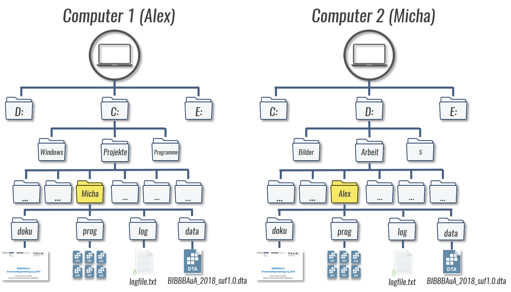

1 Macros
Macros ist die Sammelbezeichung für globals und locals in Stata.
Beide dienen zur (vorläufigen) Speicherung von Text- oder Zahleninformationen.
Definiert werden sie durch globalinhalt oder localinhalt - oft mit glo und loc als Abkürzungen.
globals können dann mit $globalname/${globalname} aufgerufen werden, locals mit `localname' - ganz einfach bspw. mit dis[play]:
glo x = 1
loc y = 2
dis ${x}
dis `y'1
2…oder mit macro list, hier sind die macros aber ohne “punctuation” (also $ oder `')
glo x = 1
loc y = 2
mac list x
mac list _yx: 1
_y: 2Der Unterschied besteht vor allem darin, dass local macros ‘lokal’ für ein spezifisches Programm verfügbar sind, globale macros hingegen für alle Programme (innerhalb einer Stata-Session) verfügbar sind. Letztlich können wir jede Instanz, in der wir mehrere Zeilen eines DoFiles ausführen als ‘Programm’ ansehen.
globals können wir später nochmal aufrufen, locals nicht:
mac list xgxg: 1mac list _xlr(111);
end of do-file
r(111);1.1 = macht einen Unterschied
In der Regel können wir auch einfach glo glname Wert bzw. loc locname Wert statt glo glname = Wert bzw. loc locname = Wert angeben.
Allerdings ist hier etwas Vorsicht geboten, denn das = ist entscheidend ob die Rechnung abgelegt wird oder das Ergebnis (Stichwort evaluation):
Im Ergebnis sehen wir hier beides Mal das gleiche:
local m1 2+2
display `m1'4local m2 = 2+2
display `m2'4Aber wenn wir uns mit mac list die abgelegten Infos ansehen, dann sehen wir den entscheidenden Unterschied:
mac list _m1 _m2_m1: 2+2
_m2: 4Wenn wir nämlich mit m1 und m2 weiterrechnen, da kann folgendes passieren:
local m1 2+2
display `m1'*410local m2 = 2+2
display `m2'*416Denn \(2+2*4\neq4*4\)
1.2 local und global sind getrennte Welten
Geht, aber ist nicht zu empfehlen:
glo yx = 1
loc yx = 2
mac list yx
mac list _yxyx: 1
_yx: 21.3 Macros mit Text
Wir können macros zu Texten zusammenbauen:
glo t1 "Hallo"
glo t2 " zusammen"
glo t3 "! :-)"
glo t4 = "${t1}${t2}${t3}"
dis "${t4}"
mac list t1 t2 t3 t4Hallo zusammen! :-)
t1: Hallo
t2: zusammen
t3: ! :-)
t4: Hallo zusammen! :-)1.4 Dateipfade
Ein macro kann auch Text enthalten und wir können diesen bspw. für Dateipfade macros verwenden:
glo pfad "D:\Projekt\daten\BIBB_BAuA" // wo liegt der Datensatz?
use "${pfad}/BIBBBAuA_2018_suf1.0.dta", clear // laden des Datensatzes Wir können das auch nutzen, um DoFiles in Kooperationsprojekten zu bauen, wenn verschiedenen Personen die DoFiles verwenden: 
glo pfad "C:\Projekte\Micha" // wo liegt der Datensatz bei Alex?
glo pfad "D:\Arbeit\Alex" // wo liegt der Datensatz bei Micha?
glo prog "${pfad}/prog"
glo data "${pfad}/data"
glo log "${pfad}/log"Micha würde dann immer den Pfad von Alex überspringen/auskommentieren und umgekehrt. Wir lernen gleich noch eine Möglichkeit kennen, das auch direkt mit zu lösen mit dem Usernamen der verwendeten PCs.
use "${data}/BIBBBAuA_2018_suf1.0.dta", clear // laden des Datensatzes Bei Dateipfaden ist jedoch \ beim Zusammenbauen mit macros manchmal problematisch). Ggf. hilft hier / statt \ zu verwenden.
1.5 Bereits definierte Macros
Mit mac list bekommen wir auch einige von Stata bereits vorgegebenen Macros angezeigt.
mac listZwei sehr nützliche sind dabei $S_DATE $S_TIME - das aktuelle Datum und die aktuelle Zeit:
dis "$S_DATE"
dis "$S_TIME"1 Dec 2021
12:44:22Diese können wir beispielsweise am Anfang und Ende eines LogFiles einblenden, um Start- und Endzeit zu dokumentieren:
log using "${log}/logfile.txt", t replace
dis "Start: $S_DATE um $S_TIME"
use ....
.
.
.
.
.
.
dis "Ende: $S_DATE um $S_TIME"
log close Außerdem gibt es einige locals mit nützlichen Infos:
dis "`c(username)'"
dis "`c(machine_type)'"
dis "`c(os)'"Filser
PC (64-bit x86-64)
WindowsWeitere “system parameters and settings” unter help creturn bspw.:
c(changed) returns a numeric scalar equal to 0 if the dataset in memory has not changed since it was last saved and 1 otherwise.
c(filename) returns a string containing the filename last specified with a use or save, such as "C:\Data\auto.dta".
c(filedate) returns a string containing the date and time the file in c(filename) was last saved, such as “7 Jul 2016 13:51.”
1.5.1 if
Mit if (local== "...") können wir macros abgleichen, um Befehle nur unter bestimmten Bedingungen auszuführen:
if ("`c(username)'" == "Filser") display "Du bist Filser"
if ("`c(username)'" != "Fischer") display "Du bist nicht Fischer"Das können wir für den Fall von eben mit mehreren Nutzern nutzen:
if ("`c(username)'" == "Alex") glo pfad "C:\Projekte\Micha" // wo liegt der Datensatz bei Alex?
if ("`c(username)'" == "Micha") glo pfad "D:\Arbeit\Alex" // wo liegt der Datensatz bei Micha?
glo prog "${pfad}/prog"
glo data "${pfad}/data"
glo log "${pfad}/log"
use "${pfad}/BIBBBAuA_2018_suf1.0.dta", clear // laden des Datensatzes 1.5.2 Macros als Variablennamen und Befehle
Auch so etwas ist möglich:
local n 200
su F`n' Variable | Obs Mean Std. Dev. Min Max
-------------+---------------------------------------------------------
F200 | 17,953 36.24272 14.03048 1 99Ein macro kann auch ein Programm sein:
loc t tab
`t' zpalterMobilfunkin |
terview | Freq. Percent Cum.
------------+-----------------------------------
Festnetz | 14,008 70.00 70.00
Mobilfunk | 6,004 30.00 100.00
------------+-----------------------------------
Total | 20,012 100.001.5.3 globals durchsuchen
Mit Hilfe sog. Wildcards können wir Zeichen “offen lassen”:
? ersetzt ein Zeichen
* mehrere oder keines
glo x1 = 2
glo x2 "das ist x2"
glo x 291
global allglo: all globals "x*"
mac l allgloallglo: x x2 x1Hier haben wir auch schon die dritte Form der macro Definition kennengelernt, die sog. extended macro function, welche auf : folgt. Hier also all globals, im Laufe dieses Kurses werden wir noch zahlreiche dieser Funktionen kennenlernen.
1.6 Wenn nicht if, dann else
Mit if haben wir die Möglichkeiten aber noch nicht ausgeschöpft - aus help if:
if `n'==1 {
local word "one"
}
else if `n'==2 {
local word "two"
}
else if `n'==3 {
local word "three"
}
else {
local word "big"
}
display "`word'"Mit exit (help exit_program) können wir Stata zu einer Unterbrechung bringen:
More generally, exit causes Stata to terminate the current process and returns control to the calling process.
if "`c(username)'" == "Alex" {
glo pfad "C:\Projekte\Micha" // wo liegt der Datensatz bei Alex?
}
else if "`c(username)'" == "Micha" {
glo pfad "D:\Arbeit\Alex" // wo liegt der Datensatz bei Micha?
}
else {
display as error "Hier fehlt der passende Pfad"
exit
}Hier fehlt der passende Pfad
end of do-file1.7 Schleifen: foreach & forvalues
Schleifen helfen uns das DRY (“Don’t repeat yourself”) Prinzip umzusetzen.
Ein vereinfachtes Syntaxdiagramm der foreach-Schleife sieht so aus:
foreach lname listtype list {
Befehle
}lname steht dabei für ein local macro.
Wir können unterschiedliche Typen von foreach-Listen verwenden:
– of varlist: Variablenlisten
– of newlist: neue Variablen
– of numlist: Nummernlisten - bspw. (0(1)5) \(\Rightarrow\) “1 bis 5 in Schritten von 1”
– in: beliebige Listen von Buchstaben, Zahlen oder Wörtern (durch Leerzeichen getrennt)
foreach n of numlist 1/3 6(1)9 {
dis "`n'"
}1
2
3
6
7
8
9foreach n of numlist 6 4: -4 {
dis "`n'"
}6
4
2
0
-2
-4Mit ferest() können wir uns die “noch übrigen Werte in der Liste anzeigen lassen:
foreach n of numlist 1(1)5 {
dis "`n'"
dis "Es kommen noch: `ferest()'"
}1
Es kommen noch: 2 3 4 5
2
Es kommen noch: 3 4 5
3
Es kommen noch: 4 5
4
Es kommen noch: 5
5
Es kommen noch: 1.7.1 Weitere Schleifentypen
Es gibt außerdem forvalues:
forvalues lname=range {
Befehle
}forvalues-Schleife ist eine foreach-Schleife mit numlist.
Aber: Die foreach-Schleife mit einer numlist funktioniert nicht mit einer beliebig hohen Anzahl von Ziffern.
In der forvalues-Schleife gibt es keine Beschränkung. Außerdem ist forvalues-Schleife schneller im Abarbeiten von Nummernlisten.
Und dann gibt es noch die while-Schleife:
loc i = 1
while `i' <= 5 {
display "`i'"
loc i = `i' + 1
}1
2
3
4
5Eine Besonderheit bei locals ist, dass wir mit loc ++i den Wert um 1 erhöhen können. Somit führt folgende Syntax zum gleichen Ergebnis:
loc i = 1
while `i' <= 5 {
display "`i'"
loc ++i
}1.7.2 Anwendung
foreach v of numlist 19(5)35 {
display "Alter bis `v'"
tab S1 if zpalter <= `v'
}Alter bis 19
Geschlecht | Freq. Percent Cum.
------------+-----------------------------------
männlich | 41 67.21 67.21
weiblich | 20 32.79 100.00
------------+-----------------------------------
Total | 61 100.00
Alter bis 24
Geschlecht | Freq. Percent Cum.
------------+-----------------------------------
männlich | 373 65.10 65.10
weiblich | 200 34.90 100.00
------------+-----------------------------------
Total | 573 100.00
Alter bis 29
Geschlecht | Freq. Percent Cum.
------------+-----------------------------------
männlich | 991 60.46 60.46
weiblich | 648 39.54 100.00
------------+-----------------------------------
Total | 1,639 100.00
Alter bis 34
Geschlecht | Freq. Percent Cum.
------------+-----------------------------------
männlich | 1,984 59.03 59.03
weiblich | 1,377 40.97 100.00
------------+-----------------------------------
Total | 3,361 100.00…oder mit inrange(), um lediglich die 5-Jahresaltersgruppe anzuzeigen:
foreach v of numlist 19(5)35 {
display "Alter " `v' - 4 " bis " `v'
tab S1 if inrange(zpalter,`v'-4, `v')
*su zpalter if inrange(zpalter,`v'-4, `v')
}Alter 15 bis 19
Geschlecht | Freq. Percent Cum.
------------+-----------------------------------
männlich | 41 67.21 67.21
weiblich | 20 32.79 100.00
------------+-----------------------------------
Total | 61 100.00
Alter 20 bis 24
Geschlecht | Freq. Percent Cum.
------------+-----------------------------------
männlich | 332 64.84 64.84
weiblich | 180 35.16 100.00
------------+-----------------------------------
Total | 512 100.00
Alter 25 bis 29
Geschlecht | Freq. Percent Cum.
------------+-----------------------------------
männlich | 618 57.97 57.97
weiblich | 448 42.03 100.00
------------+-----------------------------------
Total | 1,066 100.00
Alter 30 bis 34
Geschlecht | Freq. Percent Cum.
------------+-----------------------------------
männlich | 993 57.67 57.67
weiblich | 729 42.33 100.00
------------+-----------------------------------
Total | 1,722 100.001.7.3 Schleifen aufbauen
Einfache Schleife mit if/else: ist Zahl gerade oder ungerade?
loc n = 5
if trunc(`n'/2) == `n'/2 display "ja"
if trunc(`n'/2) != `n'/2 display "nein"
loc n = 5
dis mod(`n',2)
forvalues n = 1/10 {
if mod(`n',2) == 0 dis "`n' ist gerade"
if mod(`n',2) == 1 dis "`n' ist ungerade"
}
forvalues n = 1/10 {
if mod(`n',2) == 0 {
dis "`n' ist gerade"
}
else if mod(`n',2) == 1 {
dis "`n' ist ungerade"
}
else {
display as error "hier ging was schief"
exit
}
}mod() ist der Modulo-Operator ist Stata - es wird der “Rest” berechnet
- Variablen & value labels anzeigen/bearbeiten
- Creating interaction variables
- Fitting models with alternative measures of education
- Recoding multiple variables the same way
- Creating a macro that holds accumulated information
- Retrieving information returned by Stata
1.8 Übungen
1.8.1 Übung
- Pfad zusammenbauen für
use: Erstellen Sie den Pfad für denuse-Befehl schrittweise und unter Berücksichtigung ihres Usernamens.- ggf. Dateiverzeichnis einrichten mit Ordner log, prog und data (gerne auch mehr oder andere Namen)
- Legen Sie die Erwerbstätigenbefragung 2018 in den data-Ordner (oder dessen Äquivalent)
- Wie ist der Username auf Ihrem Gerät?
- Verwenden Sie ein
if-Statement, um den Dateipfad zu erstellen
1.8.2 Übung: FizzBuzz-Challenge
Fizz Buzz wird/wurde ein Screening-Instrument für Programmierer*innen verwendet. Fizz Buzz ist ein Kinderlernspiel, bei dem die Kinder üblicherweise im Kreis sitzen und reihum laut von eins aufwärts zählen. Allerdings gibt es zwei Regeln:
Dabei müssen alle Zahlen, die durch drei teilbar sind, durch das Wort Fizz ersetzt werden und alle Zahlen, die durch fünf teilbar sind, durch das Wort Buzz.
Wenn eine Zahl durch drei und fünf teilbar ist, dann wird Fizz Buzz gerufen.
if&elsefür Schleife- 1-10: bei geraden Zahlen “gerade” und bei ungeraden Zahlen “ungerade” anzeigen Die
1.9 Windows Dateipfade mit macros
Stata uses the character to tell its parser not to expand macros.
Windows uses the character as the directory path separator.
Mostly, there is no problem using a in a filename. However, if you are writing a program that contains a Windows path in macro path and a filename in fname, do not assemble the final result as ‘path’\‘fname’ because Stata will interpret the as an instruction to not expand ‘fname’.
Instead, assemble the final result as ‘path’/‘fname’.
Stata understands / as a directory separator on all platforms.
\(\Rightarrow\)
1.10 Details
1.10.1 local x entspricht global _x
Theoretisch kann man auch mit global _x einen local x erzeugen:
local x = 2
global _x = 3
dis local i=1
global _i=1Damit könnte man auch so alle locals auflisten:
glo x1 = 2
glo x2 "das ist x2"
glo x 291
global allglo: all globals "_x*"
mac l allgloglobal a "myvar"
gen $a = oldvar gen myvar = oldvar
gen a = oldvar gen a = oldvar
local a "myvar"
gen ‘a’ = oldvar gen myvar = oldvar
gen a = oldvar gen a = oldvar
global a "newvar"
global i = 2
gen $a$i = oldvar gen newvar2 = oldvar
local a "newvar"
local i = 2
gen ‘a’‘i’ = oldvar gen newvar2 = oldvar
global b1 "newvar"
global i=1
gen ${b$i} = oldvar gen newvar = oldvar
local b1 "newvar"
local i=1
gen ‘b‘i’’ = oldvar gen newvar = oldvar
global b1 "newvar"
global a "b"
global i = 1
gen ${$a$i} = oldvar gen newvar = oldvar
local b1 "newvar"
local a "b"
local i = 1
gen ‘‘a’‘i’’ = oldvar gen newvar = oldvar